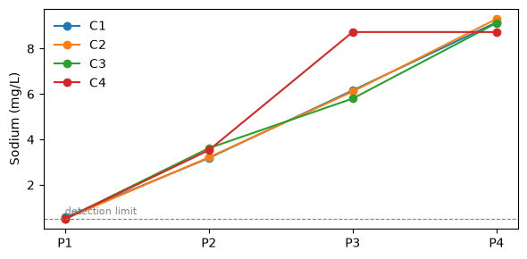

Databases - Laboratory#
This tutorial covers LabDB, the database for water samples analysed in a laboratory. Data follows a chain:
sites: places where field work happens, as points;
samples: bottles collected at a site, at a sampling time;
mixtures: what the lab actually analyses, usually one sample alone, sometimes a blend of several;
records: one result per mixture and parameter, at an analysis time.
The example is a river monitoring program with four sampling points and four campaigns, analysed for turbidity, pH and sodium.
See also
Check out the Databases - Spatial tutorial first.
Notebook setup#
For users running this tutorial as a Jupyter Notebook, this cell must be executed first:
import sys
import json
from pathlib import Path
import numpy as np
import pandas as pd
import matplotlib.pyplot as plt
import geopandas as gpd
# Install `plans` in `google.colab`.
# Use `pip install plans` for other environments.
if "google.colab" in sys.modules:
import os
os.system(f"{sys.executable} -m pip install -q plans")
from plans.databases import LabDB
# This avoids warnings related to uninstalled fonts
import logging
# Set the matplotlib font manager logger to only show errors (hides warnings)
logging.getLogger('matplotlib.font_manager').setLevel(logging.ERROR)
# define output folder
OUTPUT_DIR = Path("outputs/databases")
OUTPUT_DIR.mkdir(parents=True, exist_ok=True)
print(f"Outputs will be saved to: ./{OUTPUT_DIR}")
Outputs will be saved to: ./outputs/databases
Sites and catalogs#
Four sampling points run from upstream (P1) to downstream (P4), below a town:
sites = gpd.GeoDataFrame(
data={"name": ["P1", "P2", "P3", "P4"]},
geometry=gpd.points_from_xy(x=[-51.30, -51.22, -51.15, -51.08], y=[-29.90, -29.95, -30.02, -30.05]),
crs="EPSG:4674",
)
file_sites = OUTPUT_DIR / "lab_sites.gpkg"
sites.to_file(filename=file_sites, driver="GPKG")
The specs point to the variables turbidity, ph and sodium (physical-chemistry), all with the instant statistic, since each result is a single analysis, not an aggregate. The sources catalog that ships with plans has no laboratory, so the setup points to a custom one. Any catalog can be replaced this way:
file_sources = OUTPUT_DIR / "lab_sources.csv"
pd.DataFrame(
[{"name": "River Survey", "alias": "RS", "title": "River monitoring program", "abstract": "Synthetic campaigns", "citation": None, "url": None}]
).to_csv(file_sources, sep=";", index=False)
def make_spec(name, variable, abstract):
# one spec of lab results
return {
"name": name,
"abstract": abstract,
"method": "laboratory analysis",
"timestep": "event",
"extent": "sample",
"scale": 1,
"offset": 0,
"start": "2024-01-01",
"end": None,
"variable_name": variable,
"statistic_name": "instant",
"source_name": "River Survey",
}
specs = [
make_spec("TURB_LAB", "turbidity", "Turbidity by nephelometry"),
make_spec("PH_LAB", "ph", "pH by electrode, in triplicate"),
make_spec("NA_LAB", "sodium (physical-chemistry)", "Dissolved sodium by ion chromatography"),
]
file_specs = OUTPUT_DIR / "lab_specs.json"
file_specs.write_text(json.dumps(specs, indent=2), encoding="utf-8")
db = LabDB(name="River Lab")
db.new(
config={
"database": {"path": str(OUTPUT_DIR / "lab_db.gpkg")},
"specs": {"path": str(file_specs)},
"spatial": {"file": str(file_sites)},
"catalogs": {"sources": str(file_sources)},
},
overwrite=True,
)
db.query_sql(sql="SELECT name, units, domain FROM variables WHERE name IN ('turbidity', 'ph', 'sodium (physical-chemistry)')")
| name | units | domain | |
|---|---|---|---|
| 0 | ph | - | [0U14] |
| 1 | sodium (physical-chemistry) | mg/L | [0U) |
| 2 | turbidity | NTU | [0U) |
Samples#
Each campaign collects one bottle per site, in the morning, moving downstream. The field sheet of the third campaign lost the time of P2; following a common convention, it is set to noon:
campaigns = {"C1": "2024-02-10", "C2": "2024-05-12", "C3": "2024-08-14", "C4": "2024-11-09"}
rows = []
for campaign, day in campaigns.items():
for k, site in enumerate(sites["name"]):
time = "12:00" if (campaign, site) == ("C3", "P2") else f"{8 + k}:30"
rows.append({"name": f"{campaign}-{site}", "site_name": site, "datetime": f"{day} {time}"})
samples = pd.DataFrame(rows)
db.insert_samples(dataframe=samples)
db.query_sql(sql="SELECT id, name, datetime(datetime, 'unixepoch') AS datetime, site_id FROM samples LIMIT 5")
| id | name | datetime | site_id | |
|---|---|---|---|---|
| 0 | 1 | C1-P1 | 2024-02-10 08:30:00 | 1 |
| 1 | 2 | C1-P2 | 2024-02-10 09:30:00 | 2 |
| 2 | 3 | C1-P3 | 2024-02-10 10:30:00 | 3 |
| 3 | 4 | C1-P4 | 2024-02-10 11:30:00 | 4 |
| 4 | 5 | C2-P1 | 2024-05-12 08:30:00 | 1 |
Mixtures#
Usually the lab analyses each bottle alone. Without a name column, .insert_mixtures() makes one mixture per sample, named after it. In the last campaign, the bottles of P3 and P4 were half empty, so the lab blended them into one mixture. A blend takes one row per sample, with the same mixture name:
single = samples.loc[~samples["name"].isin(["C4-P3", "C4-P4"]), ["name"]]
db.insert_mixtures(dataframe=single.rename(columns={"name": "sample_name"}))
db.insert_mixtures(dataframe=pd.DataFrame({"name": "C4-P34", "sample_name": ["C4-P3", "C4-P4"]}))
db.query_sql(
sql="SELECT m.name AS mixture, s.name AS sample FROM mixtures m "
"JOIN mixture_samples ms ON ms.mixture_id = m.id JOIN samples s ON s.id = ms.sample_id "
"WHERE m.name LIKE 'C4%'"
)
| mixture | sample | |
|---|---|---|
| 0 | C4-P1 | C4-P1 |
| 1 | C4-P2 | C4-P2 |
| 2 | C4-P34 | C4-P3 |
| 3 | C4-P34 | C4-P4 |
Results#
Lab results usually arrive as one large table. Here, the town raises turbidity and sodium downstream, and pH drops a little. pH is measured three times per mixture. The analyses happen a few days after sampling, but the dates of the third campaign were not recorded:
rng = np.random.default_rng(seed=11) # ensure reproducibility
mixtures = db.query_sql(sql="SELECT id, name FROM mixtures")
results = []
for mixture in mixtures["name"]:
campaign = mixture[:2]
position = int(mixture[-1]) - 1 # 0 upstream to 3 downstream
wet = campaign in ("C2", "C3")
analysis = None if campaign == "C3" else pd.Timestamp(campaigns[campaign]) + pd.Timedelta(days=int(rng.integers(2, 6)))
turbidity = (8 + 10 * position) * (1.8 if wet else 1) * rng.lognormal(sigma=0.2)
sodium = 0.2 + 3 * position + rng.normal(scale=0.3)
results.append({"mixture_name": mixture, "parameter": "TURB_LAB", "value": turbidity, "datetime": analysis})
results.append({"mixture_name": mixture, "parameter": "NA_LAB", "value": sodium, "datetime": analysis})
for _ in range(3):
ph = 7.4 - 0.25 * position + rng.normal(scale=0.05)
results.append({"mixture_name": mixture, "parameter": "PH_LAB", "value": round(ph, 2), "datetime": analysis})
results = pd.DataFrame(results)
results.head(6)
| mixture_name | parameter | value | datetime | |
|---|---|---|---|---|
| 0 | C1-P1 | TURB_LAB | 10.500166 | 2024-02-12 |
| 1 | C1-P1 | NA_LAB | 0.567416 | 2024-02-12 |
| 2 | C1-P1 | PH_LAB | 7.370000 | 2024-02-12 |
| 3 | C1-P1 | PH_LAB | 7.390000 | 2024-02-12 |
| 4 | C1-P1 | PH_LAB | 7.370000 | 2024-02-12 |
| 5 | C1-P2 | TURB_LAB | 20.172434 | 2024-02-12 |
Sodium has a detection limit of 0.5 mg/L. Results below it are not detected: they get the nondetect flag (-3) and keep the limit as their value. All other results are regular (1). With mixed flags, the flag goes in a flag_value column instead of the flag argument:
lod = 0.5
results["flag_value"] = 1
below = (results["parameter"] == "NA_LAB") & (results["value"] < lod)
results.loc[below, ["value", "flag_value"]] = [lod, -3]
print(f"{below.sum()} sodium results not detected")
for spec_name, group in results.groupby("parameter"):
db.insert_records(dataframe=group.drop(columns="parameter"), spec_name=spec_name)
3 sodium results not detected
Querying#
Records point to mixtures, and queries reach the sites through the chain. Rows come ordered by the sampling time, the time the water was in the river. The sample_datetime column holds it, next to the analysis datetime, which is empty when unknown:
df = db.query_records(query_dict={"spec_name": "TURB_LAB"})
df[["sample_datetime", "datetime", "value", "mixture_id"]]
| sample_datetime | datetime | value | mixture_id | |
|---|---|---|---|---|
| 0 | 2024-02-10 08:30:00+00:00 | 2024-02-12 00:00:00+00:00 | 10.500166 | 1 |
| 1 | 2024-02-10 09:30:00+00:00 | 2024-02-12 00:00:00+00:00 | 20.172434 | 2 |
| 2 | 2024-02-10 10:30:00+00:00 | 2024-02-12 00:00:00+00:00 | 32.081521 | 3 |
| 3 | 2024-02-10 11:30:00+00:00 | 2024-02-14 00:00:00+00:00 | 36.491530 | 4 |
| 4 | 2024-05-12 08:30:00+00:00 | 2024-05-15 00:00:00+00:00 | 12.592672 | 5 |
| 5 | 2024-05-12 09:30:00+00:00 | 2024-05-16 00:00:00+00:00 | 24.038715 | 6 |
| 6 | 2024-05-12 10:30:00+00:00 | 2024-05-17 00:00:00+00:00 | 58.173989 | 7 |
| 7 | 2024-05-12 11:30:00+00:00 | 2024-05-17 00:00:00+00:00 | 58.129293 | 8 |
| 8 | 2024-08-14 08:30:00+00:00 | NaT | 12.615240 | 9 |
| 9 | 2024-08-14 10:30:00+00:00 | NaT | 61.015327 | 11 |
| 10 | 2024-08-14 11:30:00+00:00 | NaT | 73.315998 | 12 |
| 11 | 2024-08-14 12:00:00+00:00 | NaT | 27.949531 | 10 |
| 12 | 2024-11-09 08:30:00+00:00 | 2024-11-13 00:00:00+00:00 | 9.865340 | 13 |
| 13 | 2024-11-09 09:30:00+00:00 | 2024-11-13 00:00:00+00:00 | 16.216095 | 14 |
| 14 | 2024-11-09 11:30:00+00:00 | 2024-11-14 00:00:00+00:00 | 54.370475 | 15 |
Filters by site match every mixture that holds a sample from it, so the blend of the last campaign shows up under both P3 and P4:
names = db.query_sql(sql="SELECT id, name FROM mixtures").set_index("id")["name"]
for site in ["P3", "P4"]:
df = db.query_records(query_dict={"spec_name": "TURB_LAB", "site_name": site})
print(site, names[df["mixture_id"]].tolist())
P3 ['C1-P3', 'C2-P3', 'C3-P3', 'C4-P34']
P4 ['C1-P4', 'C2-P4', 'C3-P4', 'C4-P34']
The start and end keys filter by sampling time too. Here, the wet season campaigns:
df = db.query_records(query_dict={"spec_name": "NA_LAB", "start": "2024-04-01", "end": "2024-09-30"})
df[["sample_datetime", "value", "flag_value", "mixture_id"]]
| sample_datetime | value | flag_value | mixture_id | |
|---|---|---|---|---|
| 0 | 2024-05-12 08:30:00+00:00 | 0.500000 | -3 | 5 |
| 1 | 2024-05-12 09:30:00+00:00 | 3.210991 | 1 | 6 |
| 2 | 2024-05-12 10:30:00+00:00 | 6.109997 | 1 | 7 |
| 3 | 2024-05-12 11:30:00+00:00 | 9.304295 | 1 | 8 |
| 4 | 2024-08-14 08:30:00+00:00 | 0.500000 | -3 | 9 |
| 5 | 2024-08-14 10:30:00+00:00 | 5.800406 | 1 | 11 |
| 6 | 2024-08-14 11:30:00+00:00 | 9.124874 | 1 | 12 |
| 7 | 2024-08-14 12:00:00+00:00 | 3.615694 | 1 | 10 |
Storage time#
The gap between sampling and analysis is how long the bottle waited. It should not affect results; a long wait can point to problems in storage. Unknown analysis times stay empty:
df = db.query_records(query_dict={"spec_name": "PH_LAB"})
df["storage_days"] = (df["datetime"] - df["sample_datetime"]).dt.total_seconds() / 86400
df.groupby("mixture_id")["storage_days"].first().rename(index=names).round(1)
mixture_id
C1-P1 1.6
C1-P2 1.6
C1-P3 1.6
C1-P4 3.5
C2-P1 2.6
C2-P2 3.6
C2-P3 4.6
C2-P4 4.5
C3-P1 NaN
C3-P2 NaN
C3-P3 NaN
C3-P4 NaN
C4-P1 3.6
C4-P2 3.6
C4-P34 4.5
Name: storage_days, dtype: float64
Replicates and censored values#
The three pH readings of a mixture are identical in time and place. They are valid replicates, not duplicates, and only the record id tells them apart. The wide format refuses them unless an aggfunc combines them. Each mixture then gets one column, with a single value at its sampling time:
try:
db.query_records(query_dict={"spec_name": "PH_LAB", "wide": True})
except ValueError as error:
print(error)
15 replicated entries, eg: ['PH_LAB / 1 at 2024-02-10 08:30:00+00:00 has 3 values', 'PH_LAB / 2 at 2024-02-10 09:30:00+00:00 has 3 values', 'PH_LAB / 3 at 2024-02-10 10:30:00+00:00 has 3 values']; pass aggfunc to aggregate
ph = db.query_records(query_dict={"spec_name": "PH_LAB", "wide": True, "aggfunc": "mean"})
ph.columns = names[ph.columns.get_level_values("mixture_id")]
ph.mean().round(2)
name
C1-P1 7.38
C1-P2 7.16
C1-P3 6.91
C1-P4 6.62
C2-P1 7.36
C2-P2 7.15
C2-P3 6.92
C2-P4 6.65
C3-P1 7.38
C3-P3 6.89
C3-P4 6.66
C3-P2 7.18
C4-P1 7.41
C4-P2 7.17
C4-P34 6.67
dtype: float64
Censored results hold a limit, not a measurement. Before computing statistics, select records by flag. Here, the mean sodium per site with and without the non-detects:
samples_sites = db.query_sql(
sql="SELECT ms.mixture_id, si.name AS site FROM mixture_samples ms "
"JOIN samples sa ON sa.id = ms.sample_id JOIN sites si ON si.id = sa.site_id"
)
df = db.query_records(query_dict={"spec_name": "NA_LAB"}).merge(samples_sites, on="mixture_id")
pd.DataFrame(
{
"all records": df.groupby("site")["value"].mean(),
"regular only": df[df["flag_value"] == 1].groupby("site")["value"].mean(),
"not detected": df[df["flag_value"] == -3].groupby("site")["value"].count(),
}
).round(2)
| all records | regular only | not detected | |
|---|---|---|---|
| site | |||
| P1 | 0.52 | 0.57 | 3.0 |
| P2 | 3.38 | 3.38 | NaN |
| P3 | 6.70 | 6.70 | NaN |
| P4 | 9.08 | 9.08 | NaN |
Finally, sodium along the river, per campaign. In the last campaign, P3 and P4 share one value, the result of their blend:
fig, ax = plt.subplots(figsize=(6, 3))
df["campaign"] = names[df["mixture_id"]].str[:2].values
for campaign, group in df.groupby("campaign"):
group = group.sort_values("site")
ax.plot(group["site"], group["value"], marker="o", label=campaign)
ax.axhline(lod, color="gray", ls="--", lw=0.8)
ax.text(0, lod + 0.2, "detection limit", color="gray", fontsize=8)
ax.set_ylabel("Sodium (mg/L)")
ax.legend(frameon=False)
plt.tight_layout()
plt.show()

db.close()